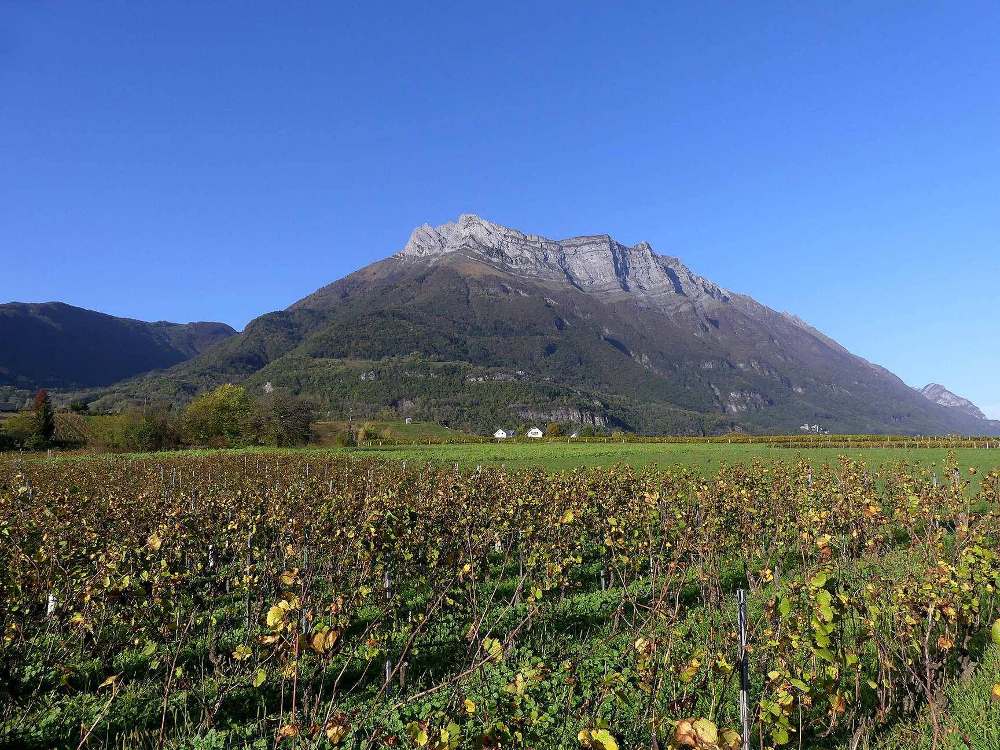
Accueil · La région
Entre les lacs et les sommets
Au pied des Bauges, dans la Combe de Savoie, entre Annecy, Chambéry et Albertville : un camp de base pour toute la Savoie.
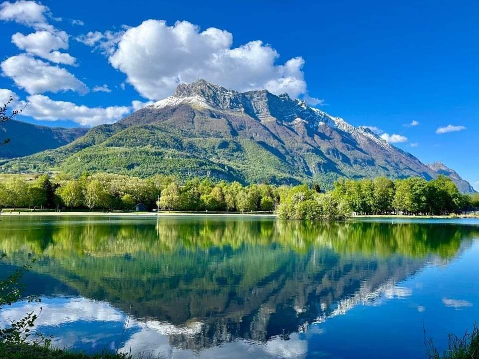
Les lacs
Le lac de Carouge, base de loisirs à 5 km, permet la baignade, le paddle et la pêche. Pour une journée au bord d’un grand lac alpin : la plage de Sevrier sur le lac d’Annecy (47 km), la plage du Lido sur le lac du Bourget (45 km) ou le lac d’Aiguebelette.
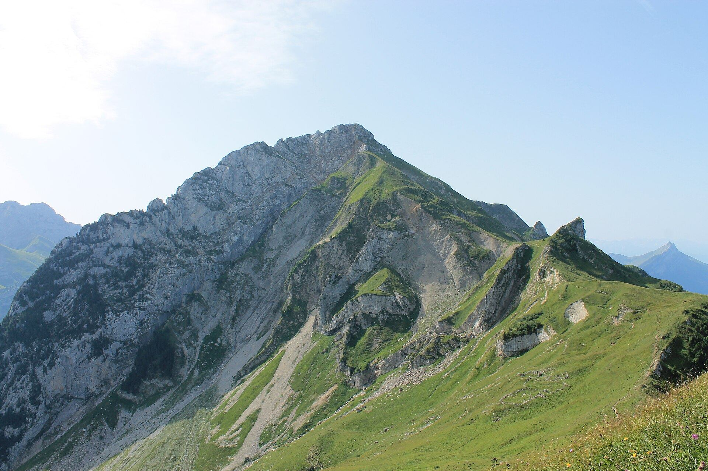
Le massif des Bauges
Les 7 Sartôts sont aux portes du Géoparc mondial UNESCO du massif des Bauges. Vos hôtes ont sélectionné sept randonnées au départ de la maison, des sorties faciles aux hauts sommets comme le Trélod, avec leurs traces GPX.
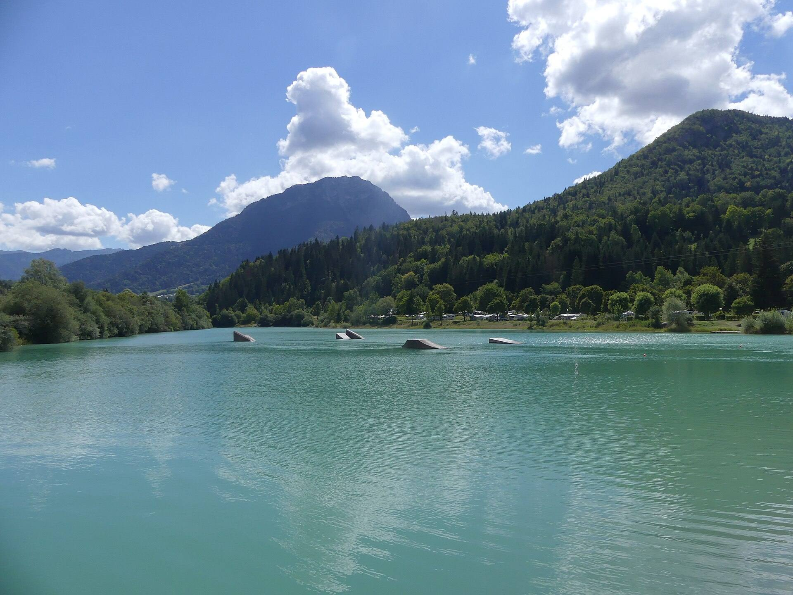
Le tour des lacs de Lescheraines
À 24 km, une balade d’environ 9 km presque sans dénivelé autour des lacs, au cœur des Bauges. Une belle pause nature sur la route du col du Frêne.
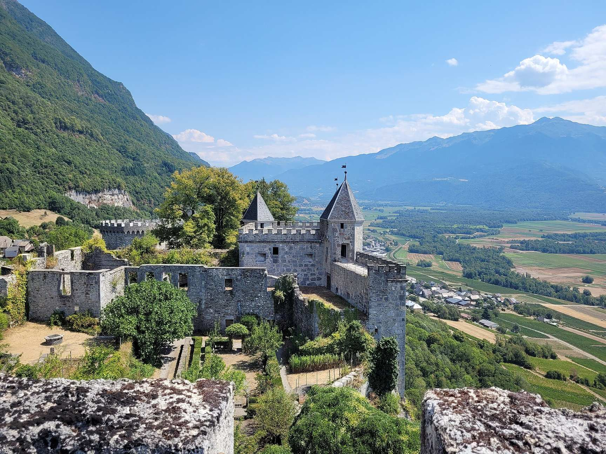
Le patrimoine
Le château de Miolans, accessible à pied, domine la Combe de Savoie. Plus loin : l’abbaye de Tamié, l’abbaye de Hautecombe au bord du lac du Bourget, le monastère de la Grande Chartreuse et le village-musée de la Combe de Savoie à Grésy-sur-Isère, idéal par temps de pluie.
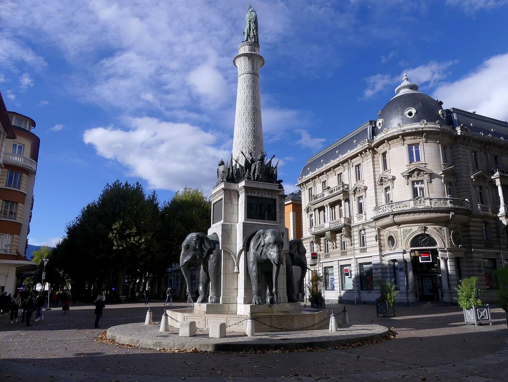
Les villes
Chambéry et sa vieille ville, Annecy et le tour du lac à vélo électrique, Chamonix et l’Aiguille du Midi ou la Mer de Glace : trois belles journées au départ des 7 Sartôts.
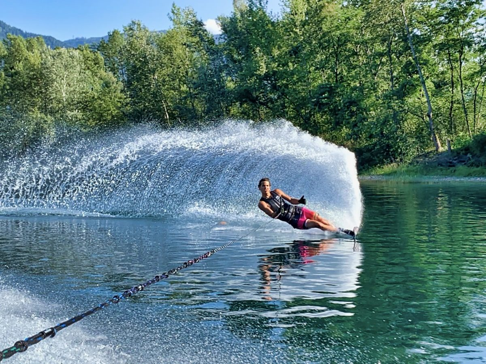
Les sports
Ski nautique et wakeboard au lac de Fréterive, à quelques minutes. Via ferrata (45 parcours en Savoie), vélo et grands cols, parapente, location de VTT, de vélos électriques et même de mobylettes vintage au village.
Photos de la région : Wikimedia Commons. Trélod-1 (VII.2017) : B. Brassoud (CC BY-SA 4.0) · Lac de Lescheraines dans les Bauges (août 2020) : Florian Pépellin (CC BY-SA 4.0) · Fortress of Miolans : OpaleRacoon (CC BY-SA 4.0) · Fontaine des éléphants de Chambéry en octobre 2020 : Florian Pépellin (CC BY-SA 4.0) · Vignobles de St-Pierre-d'Albigny et Arclusaz (automne 2022) : Florian Pépellin (CC BY-SA 4.0).
Lac de Carouge et ski nautique : photos des 7 Sartôts.
Les activités à voir
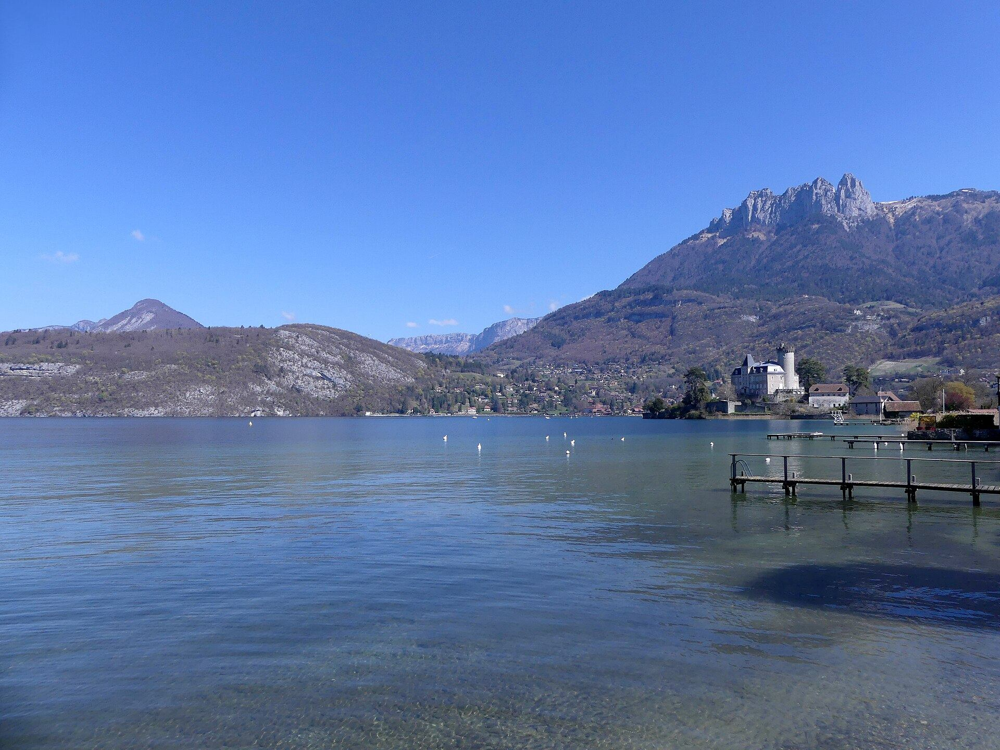
Le lac d’Annecy
Plage de Sevrier à 47 kmLe château de Miolans
Au-dessus de la Combe de Savoie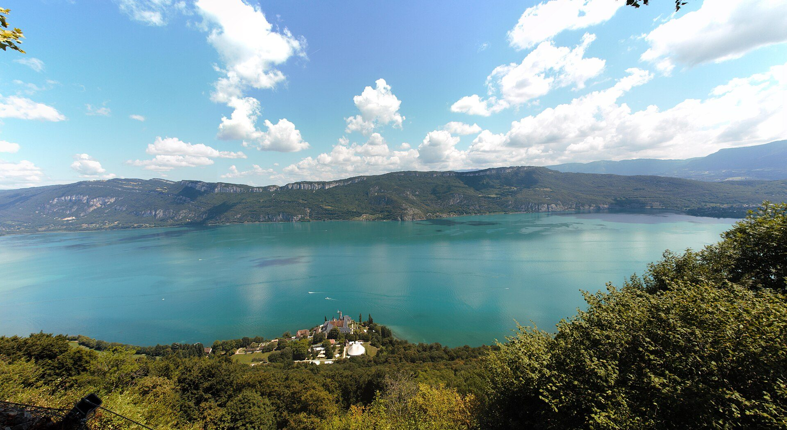
Le lac du Bourget
Plage du Lido à 45 kmLe massif des Bauges
Géoparc mondial UNESCO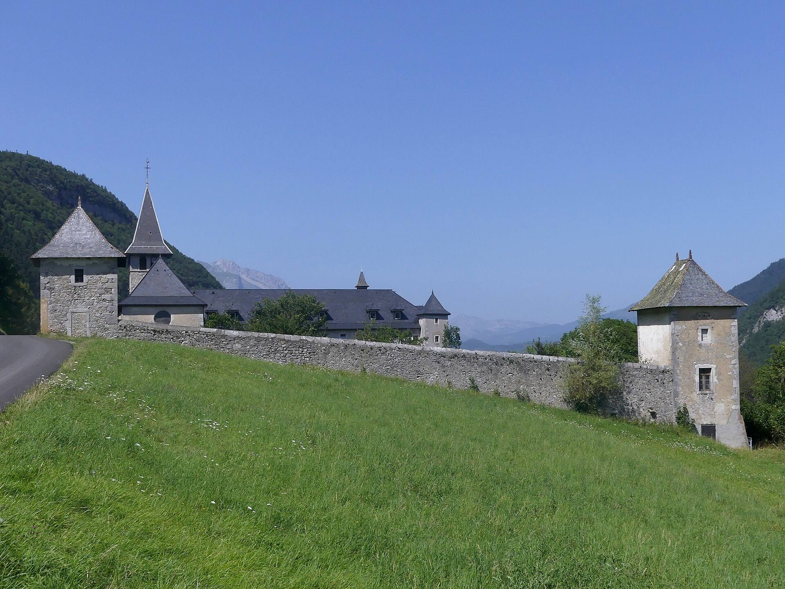
L’abbaye de Tamié
Et son fromageLes vignes de Saint-Pierre
Au pied de l’ArclusazChambéry
La vieille ville et le châteauPhotos de la région : Wikimedia Commons. Lac d'Annecy depuis Duingt au matin (avril 2023) : Florian Pépellin (CC BY-SA 4.0) · Fortress of Miolans : OpaleRacoon (CC BY-SA 4.0) · View across Lac du Bourget to Mont de Corsuet : Martin Thurnherr (CC BY-SA 4.0) · Trélod-1 (VII.2017) : B. Brassoud (CC BY-SA 4.0) · Abbaye de Tamié en été (août 2021) : Florian Pépellin (CC BY-SA 4.0) · Vignobles de St-Pierre-d'Albigny et Arclusaz (automne 2022) : Florian Pépellin (CC BY-SA 4.0) · Fontaine des éléphants de Chambéry en octobre 2020 : Florian Pépellin (CC BY-SA 4.0).
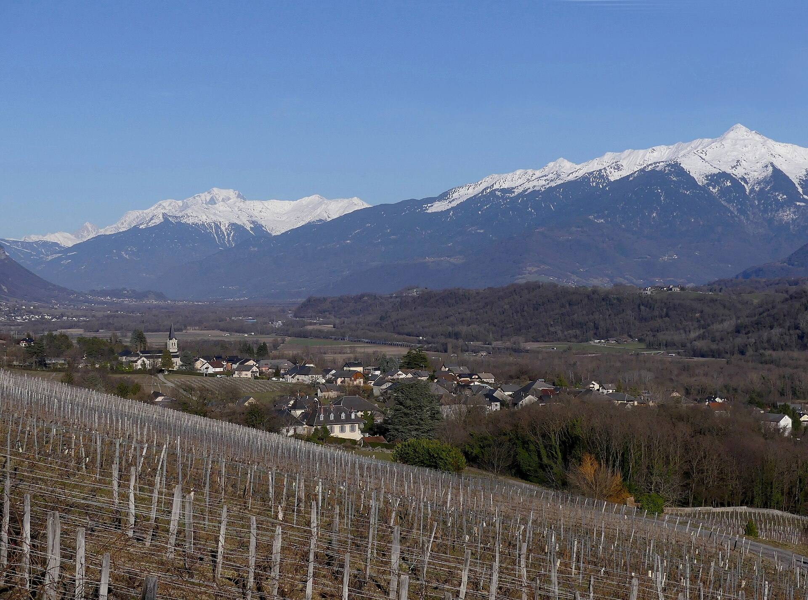
Le soir, retour au calme des sartôts
Après une journée de lac ou de montagne, la piscine et la table d’hôtes vous attendent face aux Alpes.